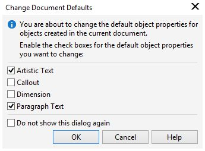

Установка шрифта по умолчанию
Всем доброго времени суток. Столкнулся с такой интересной проблемой (причем такая же трабла была и в Х6). Когда выставляю на Панели свойств Текста, шрифт Times New Roman 14 pt, чтобы он был по умолчанию в документе, он постоянно слетает. Сформулирую чуть по-другому. При создании нового документа, по умолчанию шрифт Arial 24 pt. Меняю его на Times New Roman 14 pt, набираю текст. Ну, естественно, выскакивает окно с вопросом, хочу ли я сделать такое изменение для Простого и Фигурного текста, для всего вновь создаваемого текста. Отвечаю - Да. В итоге, стоит мне начать набирать Фигурный текст в другом месте (например, набрал слово в одной части документа, другое слово в другом месте), как тут же настройка шрифта слетает и Корел нагло переключается обратно на Arial 24 pt или оставляет Times New Roman, но все равно размер упрямо переключается на 24 pt, хотя было четко указано, везде размер должен быть 14 pt. Конечно, это не трагедия, но иногда раздражает, всякий раз указывать Корелу, каким шрифтом нужно набирать текст.
Мысли по этому поводу какие есть?
открываем докер Стили ... дальше продолжать? :)
Честно говоря, несмотря на то, что способ помог (за что спасибо, конечно), но несколько через задницу сделано (в смысле куча дополнительных телодвижений) :) :). Раньше достаточно было сделать выбор (см. рис).

И небольшой глюк все равно остался. Как-то через раз проявляется. Меняю на Панели свойств шрифт, вроди все идёт, как положено, но сразу после щелчка мыши на странице, где будет печататься текст, размер шрифта слетает на тот, который был выбран по умолчанию перед этим. Т. е., устанавливаю новый размер шрифта по умолчанию, в окне ставлю галки где надо и ooops... размер поменялся автоматом на тот, который был раньше. Как я и говорил в первом посте, в более ранних версиях Корел такими чудачествами не грешил.
ну может ещё тут
Версия программы:
17.0.0.491???
поправить до
Версия программы:
17.4.0.887 :)
ну и как я понимаю ... с механизмом отображением шрифтов идёт работа ... в 17.4 даже особо подчеркнуто ... потому недочеты будут неизбежно